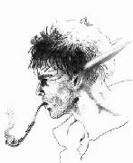

Joué par :
CrileLoup Joué par :
[ Information masquée ] Age : Adulte
Lieu de naisance : Astranaar
Sexe : Homme
Race : Elfe
Faction : Alliance
Formation : Chasseur
Niveau : 49
Guilde : Clan LunArgent Artisanat 1 : Dépeceur
Artisanat 2 : Artisant du cuir
Informations hrp : Barde, guide et instructeur de chasse en Sombrivage.
Ère du Conflit [6]
Lune de la Force [2]
Décade du Panda
Décade du Gorille
Décade de l'Ours [2]
Prologue - Un éternel recommencement.
"Vous avez été choisis, aussi devrez-vous oeuvrer de nouveau."
La voix terrassante résonnait à l'intérieur comme à l'extérieur de mon crâne et faisaient trembler nos corps chancelants.
"Un nouveau monde a besoin de vous mes amis, mes fidèles serviteurs, mes Enfants chéris."
Une lumière éblouissante nous écrasait de sa blancheur céleste et irradiait avec une énergie qu'il ne m'avait jamais été donné de ressentir, une puissance indicible qui tombait comme une chape de plomb en fusion sur nos épaules voûtées. On eût cru que le soleil lui-même s'adressait à nous. Hors artifice tissé d'illusion, je ne connaissais qu'une entité dotée d'un tel pouvoir, connue dans cet univers sous le nom de Bahamut le très-puissant. Nul doute n'était permis.
Quand je dis nous, je ne désigne aucune communauté formellement identifiée. Accroupi, la protection d'un bras et les paupières serrées suffisaient à peine à m'éviter un aveuglement irréversible et je n'osais risquer de détailler les présences à mes côtés, sinon de façon très furtive : le plissement soyeux d'une robe, l'extrémité d'un bâton, le raclement d'une botte ferrée étaient les seuls signes qui m'assuraient d'autres présences.
"Renaissez et servez-moi de nouveau. Vous avez suffisamment fait en ces lieux, et il vous reste tant à acquérir."
Ainsi fallait-il de nouveau tout quitter, tout oublier, et tout réapprendre. Mais cette Puissance mettrait sur nos routes à nous tous, ses serviteurs, les moyens de nous reconnaître. Ma foi se basait sur l'expérience d'existences déjà nombreuses passées à son service et sous tous ses noms. Je trouverai, Lumière de la lumière, la force de te servir encore.
Lumière et chaleur s'intensifièrent si brutalement qu'il me sembla sentir ma peau traversée d'une irradiation extraordinaire. Un violent feu intérieur se déchaîna en réponse, chaîne de douleur qui m'envahit instantanément tout le corps, comme s'il avait couvé trop longtemps en attendant ce seul instant. J'eus à peine le temps de percevoir ma propre main émettant une lueur brûlante qui arrachait ma peau. L'air était de flammes et, cherchant de l'air dans un vain réflexe, relique d'une existence déjà passée, j'inspirai malgré moi, ultime déchirure. Un nouveau cycle était venu.
Ô Puissance, Seigneur des Seigneurs, Inconnaissable Soleil, que ta volonté s'incarne de nouveau.
Lune d'Agilité [2]
Décade du Tigre
Décade du Singe
Décade du Faucon [2]
Indépendance
Ainsi donc, après mon éviction du rang des novices d'Elune au collège de Darnassus était venu le temps de quitter Sombrevallon. J'avais toujours pressenti que ce moment arriverait, mais sans avoir réellement de bonne raison de le précipiter. Aller chercher une soeur disparue était un vrai défi, d'autant que j'ignorais totalement ce à quoi elle ressemblait. Tout juste si je savais son nom : "Maléni".
Ma mère avait bien organisé les choses et je ne partais pas les mains vides. Ce n'est toutefois qu'à l'heure du départ qu'elle me fit savoir l'essentiel de ses dispositions : Je ne partirais pas désargenté car elle avait vendu une partie de nos biens et me cédait un héritage anticipé sous la forme de cinq grosses pièces en or frappées à l'effigie de notre grande prêtresse. "Elles ne seront pas de trop pour retrouver ta soeur et pour trouver ta voie." avait-elle déclaré en cet instant. Le ton employé ne souffrait aucune réplique mais je ne m'en offusquais pas. Ainsi était-elle au quotidien, une femme de caractère qui avait défendu farouchement son indépendance financière et sentimentale depuis tant d'années. Je souhaitais intérieurement que mon départ la libère suffisamment pour qu'elle s'autorise à ouvrir son coeur à tous ces gens qui nous avaient offert leur soutien après les années de l'Exil puis de l'installation en Teldrassil.
Je ne me souviens plus en détail du parcours qui me vit traverser de nombreuses lieues jusqu'à Dalaran puis Darnassus. Les souvenirs sont comme une mer, parcourus de vagues et la suivante efface la précédente en masquant l'horizon à qui vit trop près de la surface.
Oh, Azeroth ne s'était pas arrêtée de tourner, loin de là ! Les jours qui suivirent, une fois passé le temps nécessaire à assimiler cette condition nouvelle et à faire quelques bagages, j'embrassai ma mère, promettant de venir fréquemment la retrouver, ce qu'elle approuva plus que chaleureusement. Elle me fit part de son intention de quitter Sombrevallon pour s'installer en Darnassus, avide de profiter des charmes de la capitale après trop d'années de repli dans un bourg trop petit pour contenir ses besoins de s'ouvrir de nouveau à la vie.
Quid de ce courrier ?
Et bien, aussi incroyable que cela puisse paraître, j'en avais pratiquement oublié l'existence. Ce fut maîtresse Jocaste qui, ouvrant le pli que je lui remettai, tria les quelques feuillets d'un format différent, les identifiant rapidement pour ce qu'ils étaient. Elle me les rendit, d'un ton assez cassant, arguant qu'on ne fabriquait pas ce type de parchemin en Teldrassil et que ce courrier ancien devait être mal rangé. Ma réputation de désordre me précedait déjà !
Maîtresse Jocaste
Oh, Azeroth ne s'était pas arrêtée de tourner, loin de là. Les jours qui suivirent, une fois passé le temps nécessaire à assimiler cette condition nouvelle et à faire quelques bagages, j'embrassai ma mère, promettant de venir fréquemment la retrouver, ce qu'elle approuva plus que chaleureusement. Elle me fit part de son intention de quitter Sombrevallon pour s'installer en Darnassus, avide de profiter des charmes de la capitale après trop d'années de repli dans un bourg trop petit pour contenir ses besoins de s'ouvrir de nouveau à la vie.
Quid de ce courrier ?
Et bien, aussi incroyable que cela puisse paraître, j'en avais pratiquement oublié l'existence. Ce fut maîtresse Jocaste qui, ouvrant le pli que je lui remettai, tria les quelques feuillets d'un format différent, les identifiant rapidement pour ce qu'ils étaient. Elle me les rendit, d'un ton assez cassant, arguant qu'on ne fabriquait pas ce type de parchemin en Teldrassil et que ce courrier ancien devait être mal rangé. Ma réputation de désordre me précedait déjà !
Lune de l'Esprit [2]
Décade de la Chouette [1]
Décade de la Baleine [1]
Le dur métier d'instructeur
La jeune apprentie était prostrée. Jamais son jeune maître ne levait la voix mais en contrepartie l'effet était pire. Elle se sentait ridicule et stupide.
- "Maître..."
Assis en face d'elle dans les hautes herbes qui bordaient les dunes des plages sud d'Auberdine, loin de la cohue de la cité portuaire, le maître n'ouvrit pas la bouche, se contentant de plonger en elle son regard émeraude. Elle ne ressentit aucune colère dans son regard, mais bien pire d'une certaine façon : une terrible déception. Se savoir à l'origine de cette dernière était un supplice pour la jeune Elfe qui ne savait plus comment réagir.
- "Je sais que j'ai mal agi. Mais c'est lui qui a commencé."
Elle n'obtient aucune réaction, juste ce regard doux et aimant qui l'avait si souvent rassurée durant leurs traques.
- "Il disait toujours que tout était de ma faute. Alors qu'en fait pas du tout, c'est lui qui avait sauté le premier. Moi je n'ai fait que suivre, pour ne pas l'...
- Quelle importance en vérité ?
- "Mais il a rejetté toute la faute sur moi, il a dit que j'étais incapable et s'est montré odieux. Alors oui, je me suis moqué de son Koda, ce vieil ours qu'il a dompté avec pein...
- Quelle importance en vérité ?
Le ton doux et égal, dénué de toute colère, finit par interpeller la jeune fille lancée dans son monologue, au point de la stopper enfin. Elle baissa de nouveau les yeux. Puis, sans crier gare, une émotion intense la submerga. Sa culpabilité la trahissait et elle ne pouvait plus déroger. Elle ressentait intimement ce que son maître ne disait pas, et ne dirait probablement jamais : Elle avait eu tort. Ses yeux s'embuèrent malgré elle de larmes qu'elle ne chercha pas à retenir.
Combien de temps pleura-t-elle ainsi ? CrileLoup avait-il estimé qu'enfin la méditation avait assez durée ou bien avait-il simplement terminé de fumer une de ces longues pipes qu'il affectionnait ? C'est lui qui rompit enfin le silence, d'une voix triste.
- Ne pleure pas sur toi Nec', car il y a déjà bien assez de corruption sur nos Terres pour que tu n'en fasses pas le nid dans ton esprit. Ne voile pas la Lumière qu'Elune a mise en toi. C'est le premier de tes devoirs avant tous tes autres devoirs de chasseuse.
- Oui maître.
- Est-ce que tu comprends ce que je dis Nec' ? insista-t-il d'une voix douce.
Nectylia appréciait quand son maître s'adressait à elle de cette façon. Elle se sentait tellement moins seule dans ces cas là. Mais en l'occurrence le ton était grave et le réconfort porté par les mots et le ton plein de compassion avec lequel il s'adressait à elle ébranla encore sa volonté chancellante. Ses mots de rappel étaient si durs !
- Oui maître.
- Tu dis toujours oui, mais je ne sais plus... Je n'ai pas de doute sur le fait que tu aies entendu mes leçons, mais je doute que tu les aies faites tiennes autant que je l'attendais de toi. Peut-être est-ce que je t'en demande trop, j'en suis conscient. Je ne devrais pas te faire part de ce dernier doute, mais je sens poindre l'heure où l'appel du monde des Hommes sera si fort que ton ancien maître n'aura plus autant d'intérêt pour toi qu'auparavant. L'approche de ce moment m'attriste, d'autant plus lorsque je vois ce que tu fais de mon enseignement.
- Oh non maître. Je vous en prie.
Nectylia avait attrapé la main de son instructeur et la serrait avec vigueur, bien plus qu'elle ne l'aurait voulu car elle avait besoin d'expurger la rage qu'elle avait d'elle-même. Saura-t-elle un jour dominer ses pulsions comme elle l'avait appris durant ces longs mois ? Saura-t-elle faire taire l'instinct de la bête pour mieux percevoir celles de l'extérieur ? Saura-t-elle lire dans le coeur des Hommes comme il le faisait lui-même avec tant d'apparente facilité ? Etait-elle digne de son enseignement ? Mais en son coeur Nectylia savait que la réponse était positive. Aussi sûr que la Lumière d'Elune brillait en elle, elle savait que son maître lui avait transmis une étincelle de vérité qui ne pourrait jamais s'éteindre. Plus que transmettre, il lui avait révélé ce qu'elle détenait depuis toujours, elle, la vagabonde, la braconnière, avait tant appris.
- Nectylia...
- Oui maître ? répondit-elle en levant vers lui son visage toujours emplit de larmes.
CrileLoup semblait ému. Il caressa doucement la joue de son élève, accompagnant son geste de ces mots définitifs :
- Pour ce qui est de la chasse et du soin aux animaux, je t'ai tout donné. Même si je ne suis pas un grand instructeur, tu en sais autant que moi désormais, pour ce que ça vaut. Tu es digne de ce point de vue du rang d'instructrice.
Par ce titre, le maître lui donnait à savoir qu'il avait épuisé sa science et faisait d'elle son égale, ce qui représentait à la fois une étape et une nouvelle charge, car il lui revenait à elle, dès lors, de transmettre son savoir si elle le souhaitait. Il continua :
- ...mais là n'était pas l'âme de mon enseignement, et en ce sens je ne saurais dire si j'ai failli ou non. L'avenir le révèlera assurément et ça n'est sans doute qu'un effet d'orgueil que de vouloir trop vite des réponses. Tu es jeune, tu as été peu de temps mon apprentie et ma protégée car tu as appris très vite. Sache que je te libère désormais de mon autorité ; Tu n'as plus de comptes à me rendre et l'amitié seule doit guider ta conduite à mon égard.
- Oh maître, non !... J'ai encore tant à acquérir ! Cette faute encore envers Koltus ! J'ai eu tort maître, je le sais, je le sens et je ne sais plus comment faire pour me débarrasser de ma culpabilité. Aidez-moi je vous en prie !
- Ma protégée, voit comme tu es clairvoyante quand tu écoutes l'étincelle d'Elune qui est en toi.
- Je ne saurais le faire seule, j'ai encore besoin de vous.
- Tu n'as plus besoin de personne, Nectylia. C'est à toi de t'aider désormais à progresser sur un chemin que nul autre ne peut prendre pour toi.
- Maître, vous ai-je donc tant déçu ?
- Ne t'inquiète pas de celà ma jeune amie, ma déception n'était que très ponctuelle. Je ne nourris aucune rancune envers toi, tu le sais bien. Mon discours ne faisait que servir une idée et briser une logique fragile dans laquelle tu te réfugiais. Va maintenant : Le bateau pour le Royaume des Hommes va bientôt partir.
- Ne m'accompagnerez-vous pas maître ?
- Non pas dame chasseresse. J'ai encore beaucoup à faire sur ces terres, et ma venue dans le monde des Hommes serait prématurée. Pour l'heure ma place est ici. Que l'Esprit d'Elune brille en toi.
- Qu'Elle guide vos pas, maître.
Décade du Lapin
Troisième Ère [2]
Lune de la Force [2]
Décade du Panda
Décade du Gorille [2]
Bonheurs cascadés
Dans son refuge de Darnassus, CrileLoup médite aux événements récents.
Il pense au bonheur qui est le sien... et aussi à ceux qui en sont privés, qui sont en quête de réponses, qui sont en souffrance. Il voudrait que son bonheur puisse rejaillir sur eux et absorbe une partie de leur fardeau. Son regard ému et plein de tendresse se pose tel une plume sur le corps de celle qui repose à ses côtés, abandonnée dans le sommeil, confiante. Il l'aime plus que tout au monde, et cet amour est si vif que cette seule contemplation emballe son coeur.
Une pensée lui traverse l'esprit : Il peut au moins aider une personne, celle à qui il a confié une perle, la jeune chasseuse si fière et fragile à la fois qu'il se plaît à croiser régulièrement, Nénir.
Il saisit la perle délicatement entre ses doigts, puis la laisse glisser au creux de ses mains jointes. Ses pensées vont à celle qui cherche à étancher sa soif de réponses, celle qui est déracinée. Il l'imagine heureuse, reposée, rafraîchie, et laisse couler par la perle ses pensées les plus douces et les plus aimantes, bien plus aimantes que tout ce que les mots autorisent à exprimer entre deux êtres qui se connaissent si peu. Mais quand parlent les coeurs, tombent les faux-semblants. Il voudrait que Nénir soit caressée par cet amour, sans la déranger, sans même qu'elle le ressente sinon par ses effets indirects.
Il sait que la perle est douée pour celà.
Douce Nénir, je suis là, ton allié ne te quittera pas, tu n'es plus seule, tu l'es même encore moins qu'avant en ces instants où mon bonheur est décuplé.
Il se concentre ainsi quelques instants, laissant son âme distiller un peu de son bonheur, avant que ses pensées ne s'échappent vers des contingences plus immédiates. Il a rendez-vous avec la prêtresse A'moora, la mère de son amie d'enfance. Si elle ne peut lui répondre directement, du moins saura-t-elle le guider vers de plus aptes à avancer ses recherches, leurs recherches.
Il replace la perle dans son logement satiné avant de contempler sa jumelle. Une perle jumelle ? Il sourit intérieurement. Il faudra qu'il parle de cela à sa promise avant qu'elle ne s'en émeuve bien inutilement. De nouveau il la regarde, Elle. Un rayon matinal s'est posé sur son épaule nue, la nimbant d'une aura de lumière. Tendrement il effleure de ses lèvres la peau exposée, murmurant des paroles d'amour, n'osant l'éveiller. Un effort de volonté lui est encore nécessaire pour s'extraire discrètement de leur couche.
Un jour il l'aimera comme s'aiment les amants. Un jour ils n'auront plus à contenir leur passion.